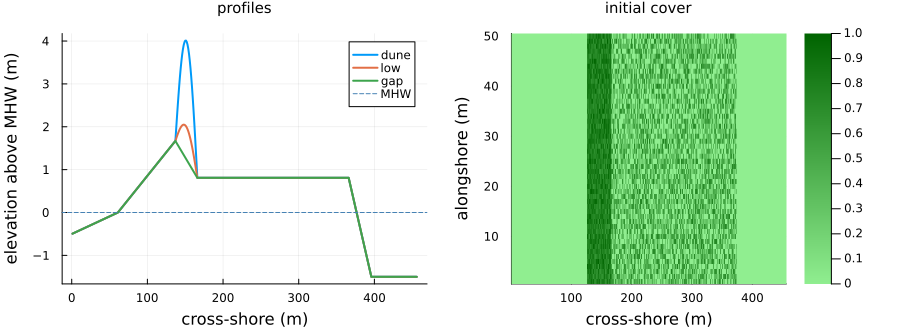
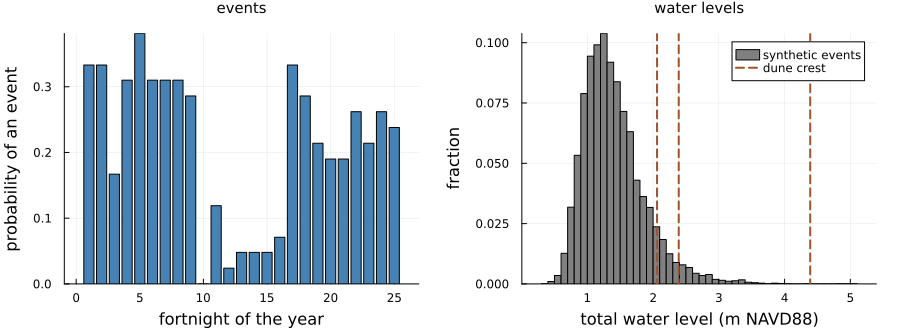
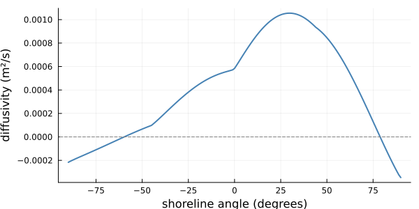
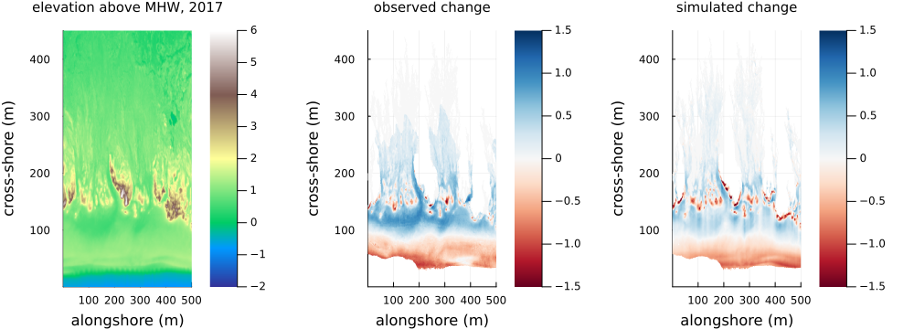
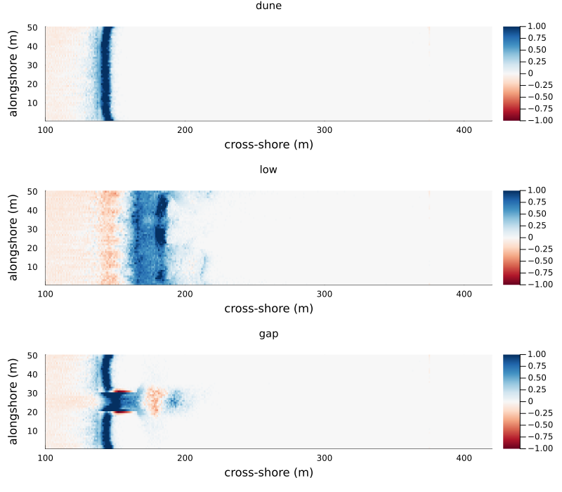
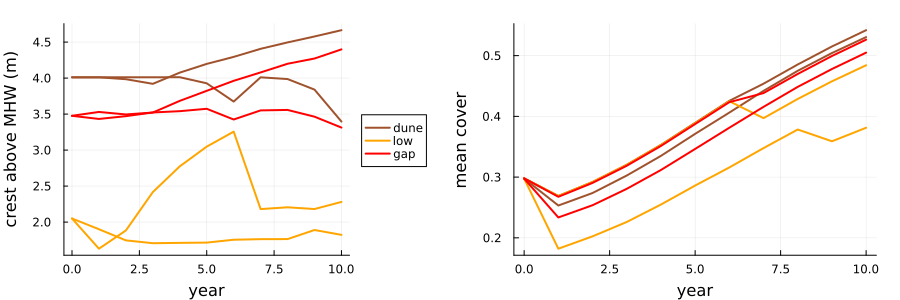
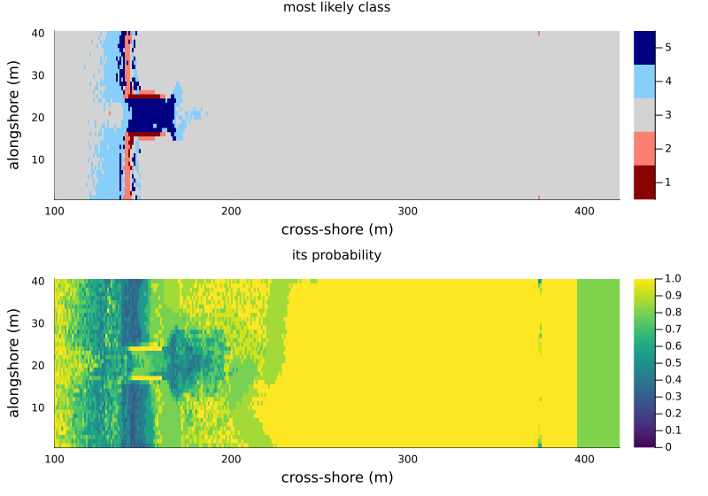

A barrier island
Simon Frost
- Overview
- The barrier
- The forcing
- Hurricane Florence
- A decade on three barriers
- What the plants respond to
- Probabilistic projections
- Summary
- Deviations from the source
- References
Overview
MEEB, the Mesoscale Explicit Ecogeomorphic Barrier model of Reeves et al. (2025), simulates an undeveloped barrier island over years to decades, on 1 m cells and weekly steps. It couples four components:
- Aeolian: the sand-slab automaton of DuBeVeg, which the dune model of vignette 20 also uses, with saltation hops of 5 ± 2 cells. The wind blows each week in one of four directions drawn from a wind rose, and the plants the wind sees are their cover smoothed over a few metres.
- Marine: every second week a high-water event may strike. Seaward of the foredune crest it erodes the beach and dune face by a cross-shore sediment flux (Eq. 2-3). Landward of the crest it routes overwash, and the sand it carries, cell by cell across the barrier (Eq. 4-9), and the plants die wherever it floods.
- Shoreline: the ocean shoreline and the shoreface toe move with sea-level rise and the sand gained or lost (Eq. 11-14), and the shoreline diffuses alongshore with the wave climate (Eq. 19-22).
- Vegetation: once a year a burial-tolerant type (dune grasses) and a burial-intolerant type (shrubs) grow or die back with their burial, and spread to new cells.
The authors calibrate MEEB for North Core Banks, North Carolina, and test it against lidar of Hurricane Florence (2018) and of 2014 to 2017. This vignette runs the port in this package, barrier_island, which follows the authors’ code, MEEB 1.0.1, where the paper is brief. It checks the forcing against the paper’s Table A1, repeats the Florence hindcast of the marine component, runs a decade on idealised barriers, looks at one point where the code and the paper differ, and runs the paper’s probabilistic framework in small.
ENV["GKSwstype"] = "100"
using EcologicalCellularAutomata
using CellularAutomataCore
using Plots
using Random
using StatisticsThe barrier
The source starts from lidar and imagery of North Core Banks. Those arrays are 100 MB each and are not shipped here, so problem(:barrier_island) builds an idealised barrier, every row the same profile: a shoreface of the equilibrium slope below mean high water (MHW, 0.39 m NAVD88), a beach rising to a dune toe 1.67 m above MHW (the paper’s mean dune toe height), a foredune 4 m above MHW (the tall foredunes of North Core Banks reach about 5 m), a level interior, a back-barrier slope and a bay 1.5 m below MHW. Dune grasses cover the foredune, and shrubs half the interior, at the paper’s initial densities of 0.4 to 1. scenario = :gap removes the foredune in the middle fifth of the rows, and :low lowers it to 2 m above MHW.
MHW = 0.39
profiles = (dune=barrier_profile(), low=barrier_profile(; dune=2.0),
gap=barrier_profile(; dune=0.0))
p1 = plot(xlabel="cross-shore (m)", ylabel="elevation above MHW (m)", legend=:topright,
title="profiles", titlefontsize=10)
for (name, z) in pairs(profiles)
plot!(p1, z .- MHW; lw=2, label=string(name))
end
hline!(p1, [0]; color=:steelblue, ls=:dash, label="MHW")
prob = problem(:barrier_island; alongshore=50, seed=1)
p2 = heatmap(prob.u0.spec1 .+ prob.u0.spec2; c=:greens, clims=(0, 1),
xlabel="cross-shore (m)", ylabel="alongshore (m)", title="initial cover",
titlefontsize=10)
plot(p1, p2; layout=(1, 2), size=(900, 330), margin=4Plots.mm)
Figure 1: The idealised barrier (sea to the left): the profiles of the three scenarios against MHW, and the initial cover of the two plant types (dune grasses on the foredune, shrubs in the interior).
The forcing
The shoreface depth, its equilibrium slope and its response rate follow from the wave climate and the sediment (Eq. 15-18). Table A1 gives 20.07 m, 0.00822 and 5926 m³/m/yr:
sf = barrier_shoreface()
(depth=round(sf.D; digits=2), equilibrium_slope=round(sf.S_eq; digits=5),
response_rate=round(Int, sf.k))(depth = 20.07, equilibrium_slope = 0.00822, response_rate = 5926)High-water events occur at most once a fortnight, with a probability that depends on the fortnight of the year, from the 1979 to 2020 record of North Core Banks (the paper’s Fig. 4b). An event is one of 9999 synthetic storms from a copula model of that record. Its total water level is the still water level plus the runup of Stockdon et al. (2006) on the local beach, so it varies alongshore with the beach slope.
storms = barrier_storms()
slope = 1.67 / 76 # the idealised beach, from MHW to the dune toe
HL = storms[:, 1] .* 9.8 .* storms[:, 4] .^ 2 ./ 2π
twl = storms[:, 3] .+ 1.1 .* (0.35 .* slope .* sqrt.(HL) .+
sqrt.((0.75 .* slope .* sqrt.(HL)) .^ 2 .+ 0.06^2 .* HL) ./ 2)
crests = (dune=MHW + 4, low=MHW + 2, gap=maximum(profiles.gap))
q1 = bar(prob.p.pstorm; color=:steelblue, legend=false, xlabel="fortnight of the year",
ylabel="probability of an event", title="events", titlefontsize=10)
q2 = histogram(twl; bins=60, color=:gray, normalize=:probability, legend=:topright,
label="synthetic events", xlabel="total water level (m NAVD88)",
ylabel="fraction", title="water levels", titlefontsize=10)
vline!(q2, collect(values(crests)); lw=2, ls=:dash, color=[:sienna :orange :red],
label=["dune crest" "low dune crest" "gap"])
plot(q1, q2; layout=(1, 2), size=(900, 330), margin=4Plots.mm)
Figure 2: The storm climate of North Core Banks: the probability of an event in each fortnight of the year (left; the paper’s Fig. 4b), and the total water levels of the synthetic events on the barrier’s beach (right), against the crests of the three scenarios.
(events_a_year=round(sum(prob.p.pstorm); digits=1),
above_gap=round(mean(twl .> crests.gap); digits=3),
above_low_dune=round(mean(twl .> crests.low); digits=3),
above_dune=round(mean(twl .> crests.dune); digits=4))(events_a_year = 5.3, above_gap = 0.086, above_low_dune = 0.037, above_dune = 0.0003)There are about five events a year. On this beach almost none of them overtops the foredune 4 m above MHW (3 in 10,000). About 4% overtop the low dune, and 9% the gap, whose highest point is the dune toe.
Alongshore, the shoreline diffuses at a rate set by the wave climate (Eq. 20-22): 60% of waves come from the left, looking offshore, and 39% at high angles (beyond 45°). The diffusivity depends on the shoreline’s angle (the paper’s Fig. 4c):
d = barrier_diffusivity()
plot(90:-1:-90, d ./ (365 * 24 * 3600); lw=2, color=:steelblue, legend=false,
xlabel="shoreline angle (degrees)", ylabel="diffusivity (m²/s)", size=(600, 300))
hline!([0]; color=:gray, ls=:dash)
Figure 3: The wave-climate-averaged shoreline diffusivity against the shoreline angle (the paper’s Fig. 4c).
Hurricane Florence
The paper tests the marine component on Hurricane Florence, which made landfall in September 2018 and washed over much of North Core Banks. Starting from lidar of 2017, it runs one event (a total water level of 3.32 m NAVD88 for 83 hours, in hourly steps of 50 substeps) and compares the change with lidar of October 2018. It scores the change with the Brier skill score (Eq. 24), one minus the squared error relative to that of predicting no change, over the cells above MHW in both surveys that the simulated or the observed overwash reached: landward of the crest, seaward of it, and both. Its Table 1 gives 0.65, 0.69 and 0.46 at the test site of its Fig. 5a, the one that MEEB’s own test script runs. That site ships with this package, barrier_florence_site(), cropped from MEEB’s input files. The event is deterministic, so the port should reproduce these scores.
site = barrier_florence_site()
p = merge(defaults(build_barrier_island()), (; overwash_substeps=50))
u = (topo=copy(site.before), spec1=site.spec1, spec2=site.spec2,
veg=clamp.(site.spec1 .+ site.spec2, 0, 1))
crest = barrier_crest(site.before, site.MHW)[1]
florence = barrier_event!(u, p, site.Rhigh, site.duration; rng=Random.Xoshiro(13))
rows, cols = size(u.topo)
dry = (u.topo .> site.MHW) .& (site.after .> site.MHW)
observed_overwash = site.overwash .& dry
seaward = [c < crest[r] for r in 1:rows, c in 1:cols] .& dry
observed = site.after .- site.before
observed[.!(observed_overwash .| seaward)] .= 0 # change elsewhere is not the storm's
reached = (observed_overwash .| florence.flooded) .& dry
skill(mask) = round(brier_skill_score(florence.change, observed, zeros(rows, cols), mask);
digits=2)
[(where="landward and seaward", port=skill(reached), Table_1=0.65),
(where="seaward of the crest", port=skill(seaward), Table_1=0.69),
(where="landward of the crest", port=skill(reached .& .!seaward), Table_1=0.46)]3-element Vector{@NamedTuple{where::String, port::Float64, Table_1::Float64}}:
(where = "landward and seaward", port = 0.65, Table_1 = 0.65)
(where = "seaward of the crest", port = 0.69, Table_1 = 0.69)
(where = "landward of the crest", port = 0.46, Table_1 = 0.46)panel(z, title; c=:RdBu, clims=(-1.5, 1.5)) =
heatmap(permutedims(z[:, 1:450]); c, clims, title, titlefontsize=10,
xlabel="alongshore (m)", ylabel="cross-shore (m)")
plot(panel(site.before .- site.MHW, "elevation above MHW, 2017"; c=:terrain, clims=(-2, 6)),
panel(ifelse.(reached .| seaward, observed, NaN), "observed change"),
panel(ifelse.(reached .| seaward, florence.change, NaN), "simulated change");
layout=(1, 3), size=(1000, 360), margin=4Plots.mm)
Figure 4: Hurricane Florence at the test site of the paper’s Fig. 5a (sea at the bottom): the elevation before the storm, and the observed and simulated change (m) seaward of the crest and wherever the observed or simulated water reached.
The port reproduces all three scores of Table 1 at this site. The same code, run on MEEB 1.0.1’s input files at the three other test sites of the paper’s Fig. 5, also matches Table 1 to two decimals:
- Fig. 5b: 0.64, 0.64 and 0.40, against 0.64, 0.64 and 0.40;
- Fig. 5c: 0.22, 0.19 and 0.21, against 0.22, 0.19 and 0.20;
- Fig. 5d: 0.79, 0.79 and 0.56, against 0.79, 0.79 and 0.56.
Those three sites are not shipped. The beach equation, the overwash routing, the detection of the crest and the avalanching thus behave as the authors’ code does. The paper’s aeolian hindcast is not repeated, because its lidar is not shipped and its score depends on random winds.
A decade on three barriers
Ten years on each scenario, two runs each, on 50 rows of 1 m with no sea-level rise. Each run records the foredune crest height above MHW, the subaerial volume, the plant cover and the shoreline every year, and the events.
function barrier_run(scenario; rows=50, years=10, seed=1, pmap=(;))
prob = problem(:barrier_island; scenario, alongshore=rows, years, seed, pmap)
p, u = prob.p, deepcopy(prob.u0)
start = copy(u.topo)
measures = [barrier_measures(u, p.MHW)]
twl = Float64[]
for t in 1:(50years)
r = barrier_step!(u, p, t, Random.Xoshiro(hash((prob.seed, t, :barrier))),
Random.Xoshiro(hash((prob.seed, t, :barrier_storm))))
r.event && push!(twl, r.twl)
t % 50 == 0 && push!(measures, barrier_measures(u, p.MHW + p.RSLR * t / 50))
end
return (; measures, twl, start, final=copy(u.topo), u)
end
cases = [(s, seed) for s in (:dune, :low, :gap) for seed in 1:2]
runs = Dict(zip(cases, fetch.([Threads.@spawn barrier_run(s; seed) for (s, seed) in cases])))
gain(r, cols) = sum(r.final[:, cols] .- r.start[:, cols]) / size(r.start, 1) # m³/m
[(scenario=s, seed=seed, events=length(r.twl),
above_its_crest=count(>(crests[s]), r.twl),
crest_start=round(r.measures[1].crest; digits=2),
crest_end=round(r.measures[end].crest; digits=2),
highest_end=round(mean(maximum(r.final[k, :]) for k in 1:50) - MHW; digits=2),
beach_and_dune=round(gain(r, 61:166); digits=1),
interior=round(gain(r, 167:396); digits=1),
cover_start=round(r.measures[1].cover; digits=2),
cover_end=round(r.measures[end].cover; digits=2),
shoreline_moved=round(r.measures[end].shoreline - r.measures[1].shoreline; digits=1))
for ((s, seed), r) in sort(collect(runs); by=first)]6-element Vector{@NamedTuple{scenario::Symbol, seed::Int64, events::Int64, above_its_crest::Int64, crest_start::Float64, crest_end::Float64, highest_end::Float64, beach_and_dune::Float64, interior::Float64, cover_start::Float64, cover_end::Float64, shoreline_moved::Float64}}:
(scenario = :dune, seed = 1, events = 60, above_its_crest = 0, crest_start = 4.01, crest_end = 4.67, highest_end = 4.74, beach_and_dune = 8.6, interior = -0.0, cover_start = 0.3, cover_end = 0.53, shoreline_moved = 1.4)
(scenario = :dune, seed = 2, events = 52, above_its_crest = 0, crest_start = 4.01, crest_end = 3.4, highest_end = 4.03, beach_and_dune = 9.0, interior = -0.0, cover_start = 0.3, cover_end = 0.54, shoreline_moved = 1.4)
(scenario = :gap, seed = 1, events = 60, above_its_crest = 6, crest_start = 3.48, crest_end = 4.4, highest_end = 4.51, beach_and_dune = 10.0, interior = 1.3, cover_start = 0.3, cover_end = 0.51, shoreline_moved = 1.7)
(scenario = :gap, seed = 2, events = 52, above_its_crest = 9, crest_start = 3.48, crest_end = 3.31, highest_end = 3.75, beach_and_dune = 9.8, interior = 0.0, cover_start = 0.3, cover_end = 0.53, shoreline_moved = 1.5)
(scenario = :low, seed = 1, events = 60, above_its_crest = 4, crest_start = 2.05, crest_end = 1.82, highest_end = 2.1, beach_and_dune = -2.4, interior = 18.3, cover_start = 0.3, cover_end = 0.38, shoreline_moved = 2.3)
(scenario = :low, seed = 2, events = 52, above_its_crest = 4, crest_start = 2.05, crest_end = 2.28, highest_end = 2.83, beach_and_dune = 9.2, interior = -0.0, cover_start = 0.3, cover_end = 0.48, shoreline_moved = 1.4)The middle fifth of the rows, the gap in the :gap barrier:
middle = 21:30
[(scenario=s, seed=seed,
highest_point=round(mean(maximum(r.final[k, 61:170]) for k in middle) - MHW; digits=2),
beach_and_dune=round(sum(r.final[middle, 61:166] .- r.start[middle, 61:166]) / 10;
digits=1),
interior=round(sum(r.final[middle, 167:396] .- r.start[middle, 167:396]) / 10; digits=1),
biggest_events=round.(sort(r.twl; rev=true)[1:3]; digits=2))
for ((s, seed), r) in sort(collect(runs); by=first) if s !== :dune]4-element Vector{@NamedTuple{scenario::Symbol, seed::Int64, highest_point::Float64, beach_and_dune::Float64, interior::Float64, biggest_events::Vector{Float64}}}:
(scenario = :gap, seed = 1, highest_point = 3.25, beach_and_dune = 21.6, interior = 3.9, biggest_events = [3.0, 2.92, 2.69])
(scenario = :gap, seed = 2, highest_point = 2.72, beach_and_dune = 18.2, interior = 0.3, biggest_events = [3.12, 2.51, 2.49])
(scenario = :low, seed = 1, highest_point = 2.07, beach_and_dune = -1.2, interior = 18.7, biggest_events = [2.98, 2.85, 2.64])
(scenario = :low, seed = 2, highest_point = 2.76, beach_and_dune = 9.6, interior = -0.0, biggest_events = [3.1, 2.5, 2.49])Sand blows off the beach onto the foredune. On the continuous dune and the low one, the beach and dune gain about 9 m³ per metre of coast in ten years, and the interior, where the shrubs stop all entrainment, does not change. The crest that MEEB’s procedure finds rises from 4.01 to 4.67 m above MHW in the first run. In the second it falls to 3.40 m, though the dune was never overtopped. A new ridge 3.6 m high has grown on the dune’s seaward face, and AutoMorph’s rule takes the most seaward peak within 10% of the highest; the old crest still stands at 4.03 m. Plant cover rises from 0.30 to about 0.53 as the grasses spread onto the beach and the shrubs fill the interior. With no sea-level rise the shoreline still moves about 1.4 m landward, because the storms move sand from the shoreface onto the beach (Eq. 13, qbd).
The low dune shows how much the timing of storms matters. In the first run, events of 2.6 to 3.0 m NAVD88 come early and overtop it. Their overwash carries 18.7 m³ per metre into the interior of the middle rows, and the beach and dune lose sand. In the second run the early events are smaller, and the dune grows to 2.8 m above MHW. Even its event of 3.1 m then fails to overtop it, and nothing reaches the interior. The gap does not stay open. Sand blown into it builds a dune 2.7 to 3.3 m above MHW where there was none, and the gap’s beach and dune gain about twice as much as elsewhere (18 to 22 m³/m). Only the first run’s early events wash over it before it closes, with 3.9 m³/m in the interior behind.
plot([heatmap(runs[(s, 1)].final .- runs[(s, 1)].start; c=:RdBu, clims=(-1, 1),
title=string(s), titlefontsize=10, xlabel="cross-shore (m)",
ylabel="alongshore (m)", xlims=(100, 420))
for s in (:dune, :low, :gap)]...; layout=(3, 1), size=(800, 700), margin=3Plots.mm)
Figure 5: Elevation change (m) over ten years on the three barriers (first seed; sea to the left).
c1 = plot(xlabel="year", ylabel="crest above MHW (m)", legend=:outerright)
c2 = plot(xlabel="year", ylabel="mean cover", legend=false)
for (s, col) in zip((:dune, :low, :gap), (:sienna, :orange, :red)), seed in 1:2
r = runs[(s, seed)]
plot!(c1, 0:10, [m.crest for m in r.measures]; color=col, lw=2,
label=seed == 1 ? string(s) : "")
plot!(c2, 0:10, [m.cover for m in r.measures]; color=col, lw=2)
end
plot(c1, c2; layout=(1, 2), size=(900, 300), margin=4Plots.mm)
Figure 6: The foredune crest above MHW, as MEEB’s procedure finds it, and the plant cover each year (both seeds).
What the plants respond to
The paper says growth depends on “the net erosion/deposition over the course of the preceding year” (Sect. 2.1). MEEB’s code clears its sedimentation balance at the end of every weekly step, so at the yearly vegetation update its plants see only that week’s burial. The port follows the paper by default (balance_period = :year); :week follows the code.
weekly = Dict(seed => barrier_run(:dune; seed, pmap=(; balance_period=:week)) for seed in 1:2)
[(balance=b, seed=seed, crest_end=round(r.measures[end].crest; digits=2),
beach_and_dune=round(gain(r, 61:166); digits=1),
grass_on_the_dune=round(mean(r.u.spec1[:, 126:166]); digits=2),
cover_end=round(r.measures[end].cover; digits=2))
for (b, set) in (("year", Dict(k => runs[(:dune, k)] for k in 1:2)), ("week", weekly))
for (seed, r) in sort(collect(set); by=first)]4-element Vector{@NamedTuple{balance::String, seed::Int64, crest_end::Float64, beach_and_dune::Float64, grass_on_the_dune::Float64, cover_end::Float64}}:
(balance = "year", seed = 1, crest_end = 4.67, beach_and_dune = 8.6, grass_on_the_dune = 0.55, cover_end = 0.53)
(balance = "year", seed = 2, crest_end = 3.4, beach_and_dune = 9.0, grass_on_the_dune = 0.61, cover_end = 0.54)
(balance = "week", seed = 1, crest_end = 4.46, beach_and_dune = 8.5, grass_on_the_dune = 0.51, cover_end = 0.53)
(balance = "week", seed = 2, crest_end = 3.4, beach_and_dune = 8.6, grass_on_the_dune = 0.6, cover_end = 0.54)Over a decade on this barrier the difference is small. With the code’s weekly balance, grass covers a little less of the dune (0.51 and 0.60 against 0.55 and 0.61), and the first run’s crest ends 0.2 m lower. The dune gains almost the same sand. Grass grows fastest under moderate burial, about 0.5 m a year at the peak of its curve, and a single week rarely brings that much. So under the code’s balance the grasses grow close to their rate at no burial, whichever cells the wind is building. The effect would grow with time and with the burial the dunes receive.
Probabilistic projections
The paper’s probabilistic framework (Sect. 2.6, Fig. 8) runs batches of duplicate simulations, which differ only in their random storms, winds and plants, for each bin of a distribution of the external forcing, weights their outcomes by the bin’s probability, and maps the most likely class of elevation change and how certain it is. Its bins are three rates of sea-level rise to 2050 under SSP5-8.5: 6.8, 9.6 and 12.4 mm/yr, with probabilities 0.26, 0.55 and 0.19. Its classes are more than 0.5 m of erosion, 0.1 to 0.5 m of erosion, within 0.1 m, 0.1 to 0.5 m of deposition, and more than 0.5 m of deposition, as in MEEB’s code. The paper runs 32 duplicates for 32 years on 500 m of North Core Banks; here there are four for ten years, on 40 rows of the barrier with a gap.
bins, weights = (0.0068, 0.0096, 0.0124), (0.26, 0.55, 0.19)
edges = (-Inf, -0.5, -0.1, 0.1, 0.5, Inf)
labels = ["major erosion", "minor erosion", "negligible", "minor deposition",
"major deposition"]
ensemble = [(b, k) for b in 1:3 for k in 1:4]
outcomes = fetch.([Threads.@spawn barrier_run(:gap; rows=40, seed=100b + k,
pmap=(; RSLR=bins[b]))
for (b, k) in ensemble])
classify(Δ) = findfirst(i -> edges[i] <= Δ < edges[i + 1], 1:5)
joint = zeros(5, size(outcomes[1].final)...)
for ((b, k), r) in zip(ensemble, outcomes), I in CartesianIndices(r.final)
joint[classify(r.final[I] - r.start[I]), I] += weights[b] / 4
end
likely = [argmax(view(joint, :, I)) for I in CartesianIndices(outcomes[1].final)]
certainty = [maximum(view(joint, :, I)) for I in CartesianIndices(outcomes[1].final)]
land = 61:396 # the barrier, shoreline to bay
[(class=labels[c], share_of_barrier=round(mean(likely[:, land] .== c); digits=3),
mean_certainty=count(likely[:, land] .== c) > 0 ?
round(mean(certainty[:, land][likely[:, land] .== c]); digits=2) : missing)
for c in 1:5]5-element Vector{@NamedTuple{class::String, share_of_barrier::Float64, mean_certainty::Float64}}:
(class = "major erosion", share_of_barrier = 0.004, mean_certainty = 0.58)
(class = "minor erosion", share_of_barrier = 0.009, mean_certainty = 0.46)
(class = "negligible", share_of_barrier = 0.921, mean_certainty = 0.93)
(class = "minor deposition", share_of_barrier = 0.044, mean_certainty = 0.56)
(class = "major deposition", share_of_barrier = 0.022, mean_certainty = 0.62)Over ten years most of this barrier, the vegetated interior, most likely changes by less than 0.1 m, and that is near certain. The change is on the beach and dune:
- deposition on the upper beach;
- erosion in a strip along the foot of the dune, where storms cut the dune face, and along the walls of the gap;
- major deposition filling the gap, where the wind builds a dune.
Each of these is most likely with a probability of only 0.3 to 0.6. Behind the gap the duplicates disagree too, as behind the dunes in the paper’s Fig. 8, with its “small but very real possibility” of overwash. The bay is the one place where the bins differ clearly. Its floor is held 1.5 m below a rising MHW, so it rises by more than 0.1 m only at the fastest rate, and “negligible” there has the probability 0.81 = 0.26 + 0.55. Elsewhere ten years of sea-level rise, at most 0.12 m, moves few cells across a class boundary, so the bins differ mostly through their random storms. Over the paper’s 32 years they would separate more.
colours = cgrad([:darkred, :salmon, :lightgray, :lightskyblue, :navy], 5; categorical=true)
plot(heatmap(likely; c=colours, clims=(0.5, 5.5), xlims=(100, 420), title="most likely class",
titlefontsize=10, xlabel="cross-shore (m)", ylabel="alongshore (m)",
colorbar_ticks=(1:5, labels)),
heatmap(certainty; c=:viridis, clims=(0, 1), xlims=(100, 420), title="its probability",
titlefontsize=10, xlabel="cross-shore (m)", ylabel="alongshore (m)");
layout=(2, 1), size=(800, 560), margin=3Plots.mm)
Figure 7: The most likely class of elevation change after ten years on the barrier with a gap (rows 17 to 24), weighted over three rates of sea-level rise and four duplicates each, and the probability of that class (the paper’s Fig. 8).
Summary
| Question | Result |
|---|---|
| Does the forcing match Table A1? | Yes: the shoreface depth, equilibrium slope and response rate to the digits given |
| Does the marine component match the paper’s hindcast of Hurricane Florence? | Yes: all three Brier skill scores at the shipped site, and at the three other test sites run on MEEB’s files, to two decimals |
| Does a tall foredune protect the barrier? | Yes: in ten years of North Carolina’s storms nothing overtops 4 m above MHW, and the dune grows |
| Does a low dune? | It depends on the storms’ timing: overtopped early, it sends 19 m³/m into the interior; spared early, it grows out of reach |
| Does a gap stay open? | No: wind-blown sand builds a dune in it within a few years, after at most a little washover |
| Does the code’s weekly balance matter? | A little over ten years: slightly less dune grass and a lower crest |
Deviations from the source
foreach(d -> println("- ", d), model_info(:barrier_island).deviations)- The domain is an idealised barrier (a shoreface, a linear beach to a dune toe 1.67 m above MHW, a foredune, a level interior, a back-barrier slope and bay) with uniform rows, in place of the lidar and imagery of North Core Banks the source starts from, which are not shipped (MEEB's initial elevations are 100 MB each); initial plant cover follows the paper's density classes (0.4 to 1). Only the test site of Fig. 5a is shipped, for the Florence hindcast, cropped to the 701 m cross-shore that hold the barrier and rounded to the millimetre (its scores are unchanged to two decimals).
- The source code is followed where the paper is brief: the dune crest procedure, the beach slopes for runup, the storm probabilities by fortnight and the synthetic and hindcast events of North Core Banks are MEEB 1.0.1's. Its erosive timescale (1.48 with 25 beach substeps in each of 25 overwash substeps an hour) is used, where Table A1 gives Te = 0.68 and swaps the two substeps.
- By default the plants respond to their burial over the year (balance_period = :year), as the paper says; MEEB's code clears the balance every week, so its plants respond to the burial of the week of the vegetation update only (balance_period = :week).
- Slabs and shadows use open boundaries, as the paper says; MEEB's code rolls the arrays, so slabs blown off one side reappear on the other and can land after a hop, and for seaward and alongshore-up winds its last column or row is not blocked.
- Avalanching applies to cells above MHW; MEEB's code compares the elevation in slabs with MHW in metres, so its test is nearly always true.
- Cells are 1 m only (MEEB 1.0.1's default and the paper's resolution); the shoreline equations of the code are in cells and per row, which agree with metres only there.
- Where a beach slope for runup is not finite, the previous row's is used (0.03 in the first row), as MEEB 1.1.0 does; 1.0.1 has no guard. Savitzky-Golay windows longer than the coast are shortened to it, and even ones by one; MEEB 1.0.1 needs at least 11 rows.
- The random numbers are Julia's, so runs match MEEB in distribution, not draw for draw.References
Reeves, Ian R. B., Andrew D. Ashton, Erika E. Lentz, Christopher R. Sherwood, Davina L. Passeri, and Sara L. Zeigler. 2025. “Projecting Management-Relevant Change of Undeveloped Coastal Barriers with the Mesoscale Explicit Ecogeomorphic Barrier Model (MEEB) V1.0.” Geoscientific Model Development 18 (23): 9319–48. https://doi.org/10.5194/gmd-18-9319-2025.